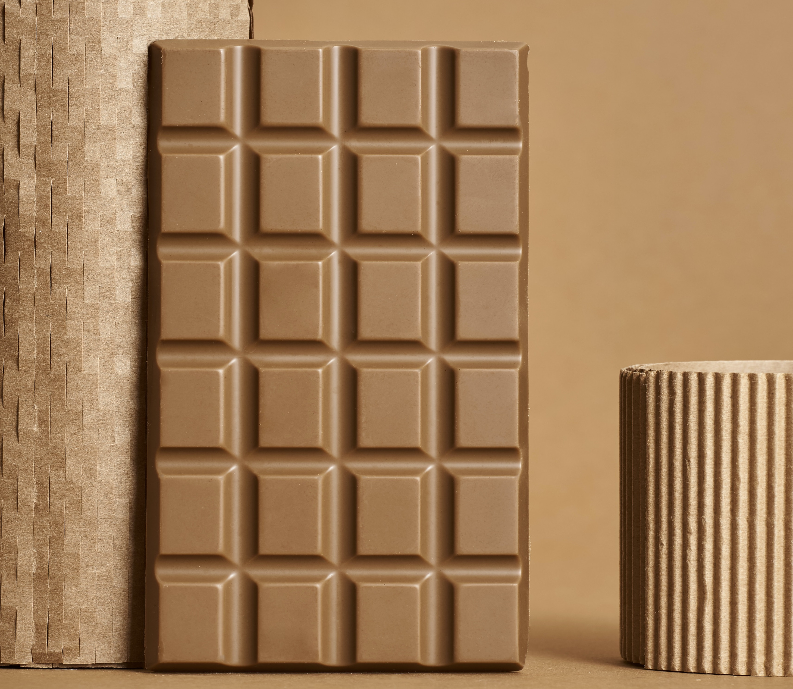

Buah yang tumbuh di daratan tinggi ini banyak digemari oleh setiap kalangan. Beragam jenis cokelat yang ada membuat orang-orang berkreasi dalam mengolah buah yang satu ini.
Beranda
Cokelat merupakan makanan yang sangat digemari oleh banyak pihak. Hal unik tentang cokelat adalah buah ini mempunyai biji berwarna putih yang harus difermentasi terlebih dahulu agar mendapati rasa dan warna khas cokelat.
Macam-macam cokelat terbagi menjadi 3 jenis, yakni cokelat hitam, cokelat susu, dan cokelat putih. Masing-masing jenis cokelat memiliki komposisi tersendiri, dan karakteristik yang mereka miliki pun berbeda-beda.
Jenis-jenis cokelat
Macam-macam cokelat terbagi menjadi 3 jenis, yakni cokelat hitam, cokelat susu, dan cokelat putih. Masing-masing jenis cokelat memiliki komposisi tersendiri, dan karakteristik yang mereka miliki pun berbeda-beda.
Cokelat Hitam/ Dark-chocolate
Rasa dark chocolate relatif lebih pahit khas daripada jenis cokelat lain karena kandungan kakao yang tinggi. Kandungan kakao yang tinggi juga memengaruhi warna dark chocolate yang terlihat lebih gelap.
Cokelat Putih/ White-chocolate
White chocolate atau cokelat putih memiliki komposisi yang hampir sama dengan milk chocolate namun tidak mengandung cokelat padat melainkan menggunakan lemak cokelat (cocoa butter) dengan gula dan susu bubuk.
Cokelat Susu/ Milk-chocolate

Cokelat susu adalah cokelat padat yang mengandung kakao, gula, dan susu. Istilah "cokelat susu" pertama digunakan untuk minuman yang dibawa ke London dari Jamaika pada tahun 1687, namun baru setelah penemu asal Swiss Daniel Peter berhasil menggabungkan kakao dan susu kental pada tahun 1875, dan menciptakan cokelat susu batangan.
Produk-produk Cokelat
Pada saat ini banyak sekali produk-produk yang dibuat dengan olahan cokelat, diantarnya seperti di bawah ini :